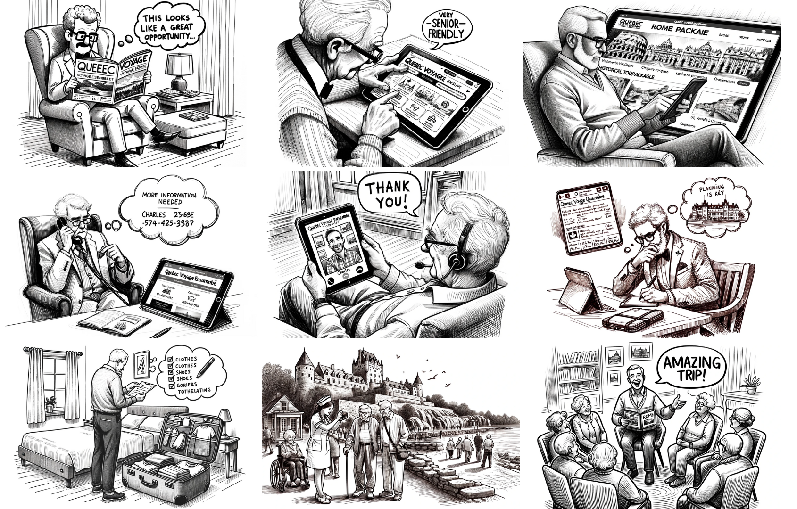
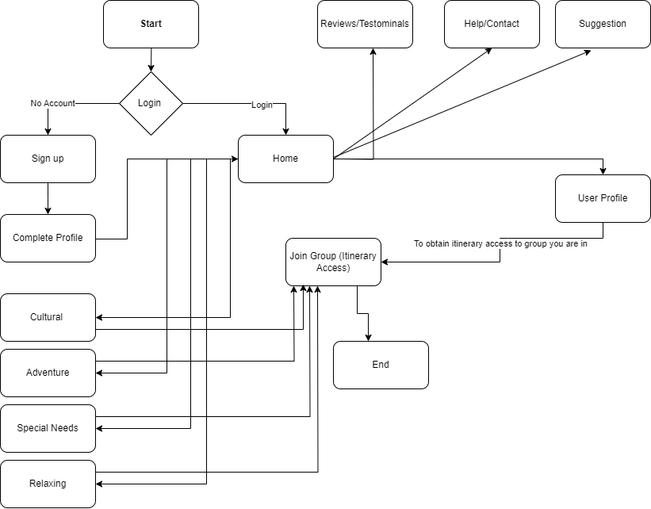
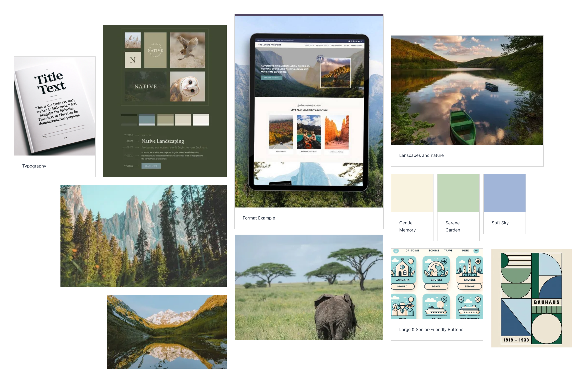

Case Study: Designing for the Elderly
Quebec Voyage Ensemble — Designing An Initiative for Elderly Wellness

Participants:
William Nazarian #40213100
Valeria Dolgaliova #40212218
Date 10/22/2023
Date 10/22/2023
In a digital era marked by progressive technological advancement, the difficulty often lies in designing innovations that cater to the diverse needs of the global population. At the forefront of this dilemma is the senior demographic, a group characterized not just by health challenges, but also by vibrant dreams, ambitions and aspirations waiting to be realized. Despite their growing tech-savviness, the elderly often find their rich desires, such as the yearning for travel in their golden years, sidelined by mainstream solutions. In the wake of this problem, we present "Quebec Voyage Ensemble," an initiative that seeks to address the physical and mental wellbeing of the elderly in Quebec, especially in the aftermath of the Covid-19 pandemic that reshaped the way they perceive healthcare, life goals, and social connections.
The World Health Organization’s data from 2018 throws light on a crucial aspect of modern living – while Canadians now enjoy a longer lifespan, their healthspan, the period devoid of chronic illness or degeneration, hasn't seen a comparable increase. This division highlights the need for innovative solutions that can extend the quality of life, not just its duration. While the market offers technologies aimed at enhancing the self-reliance, social engagement, and wellness of the elderly, ranging from health monitoring to medication reminders and fitness services, many fail to truly align with their deepest aspirations or provide a singular, enriching life experience tailored to senior users. In fact, elderly individuals, despite being in their old age and experiencing various physical and mental health challenges, yearn to connect, explore, realize their dreams and create lasting memories. The pandemic, with its social distancing measures, stay at home orders and particularly travel restrictions, only intensified these latent aspirations. "Quebec Voyage Ensemble" recognizes that physical activity, coupled with the fulfillment of life-long dreams, can play a pivotal role in enhancing both mental and physical wellness respectively. Our vision is not just a senior-friendly travel website, but a holistic platform that fosters community, exploration, and personal growth for Quebec's elderly population.
We present a sophisticated travel and tourism platform tailored for senior users, enabling them to embark on group journeys across the globe. “Quebec Voyage Ensemble”, short QVA, caters to the deeply-seated aspirations many hold from their busier adult years, those dreams and experiences left unfulfilled due to life's demands. The COVID-19 pandemic, with its numerous restrictions, further heightened this yearning for travel among the elderly.
With a UI/UX design tailored for seniors, our platform offers diverse travel packages, from adventurous excursions to historical explorations and tranquil retreats, ensuring there's something for every personality. Recognizing the varied physical capacities of older adults, trips are also categorized based on the level of activity involved, accommodating those who may have mobility constraints.
To ensure the well-being of our senior travelers, we'll employ nurses and caregivers, funded by the Quebec government, to accompany groups. These healthcare professionals will oversee medication schedules, provide emotional and mobility support, offer assistance in navigation and local services, provide essential medical care in emergency situations, and perform many other duties to support and assist elderly travelers. This ensures that not just the physical safety but also the health of our travelers in times of potential health threats like COVID-19.
Pre-trip social events will be organized, giving participants the chance to socialize and strengthen bonds, fostering a more compatible travel experience. We believe our platform will significantly contribute to the well-being of seniors, granting them the chance to realize long-held travel dreams, maintain being physically active, and form meaningful connections, all of which are crucial to their overall wellness.
We first studied existing travel agencies and organization websites to observe what is currently on the market. Afterwards, we compiled the strongpoints in features and design choices that inspired our own website, as well as the weak points that we made sure to avoid.
Offers educational trips worldwide for seniors, which give participants the chance not only to see new places but also to learn about them in depth.
Specializes in adventure travel designed for seniors over 50. Their trips cover everything from African safaris to Antarctic expeditions.
This organization provides international travel opportunities specifically for Americans over 50. They offer both land tours and cruises.
A UK-based company that offers a wide range of holidays tailored for the over 50s. Their options include cruises, escorted tours, and hotel stays.
The following answers would serve as further evidence to support our research.
Our research of the current market provided us profound insights into the problem at hand. However, in order to better understand our user needs, preferences, motivation and pain points, we formulated 5 key interview questions to ask a sample population of 40 seniors aged over 60 and above. We conducted in-person interviews in a senior retirement home, and using the collected data, plugged it into Excel in order to generate pie charts and graphs. These answers and data collected that would inform our website design, and served as further evidence to support our research
The people who voted no are people who will not be using our product, hence their input won't contribute to our application since they are not potential users.
Through these answers, we were able to deduct everyone's responses' into 4 different categories. Most people wanted either a vacation to enjoy the beauty and the culture of other countries or simply a relaxing vaction, some of the people wanted some adventurous activities such as hiking and parachuting and the rest were mostly the elders with wheel chairs that wanted to go on a getaway as long as someone was there to assist them along the way for their needs.
Out of 29 individuals surveyed regarding the importance of healthcare during their trip, 8 deemed it to be of little to no significance. This response suggests that they perceive themselves to be in good health and may not require medical attention throughout their journey. Conversely, a majority of the participants rated healthcare as slightly or moderately important, indicating a general state of well-being, though they acknowledge the potential need for medical support. Those who categorized healthcare as important or very important are potentially dealing with serious underlying health conditions, underscoring the necessity for healthcare professionals to be readily available to assist during the trip.
1. "I'm not very comfortable using computers, and sometimes the websites are just too confusing."
2. "Booking online can be tricky. I am never sure if I did everything right until I get a confirmation, and sometimes even that is confusing."
3. "I find it difficult to navigate through multiple websites to compare prices and find the best deal."
1. "There’s just too much information out there. I don’t know where to start or who to trust."
2. "Every site has so many options; it's overwhelming. I just need something simple and straightforward."
3. "Sometimes there are too many choices for flights and hotels, and it’s hard to know what’s the best."
1. "The text on the websites is so small, and it’s hard for me to read without straining my eyes."
2. "I find that not all websites are senior-friendly. I need larger fonts and a more straightforward layout."
3. "Some websites do not work well with my screen reader, making it impossible for me to use them."
1. "I’m always worried about online scams, and I'm not sure which websites are safe to use."
To substantiate our hypothesis that potential travelers would prefer to familiarize themselves with their fellow journeyers to enhance their comfort levels, we posed a pertinent query. The results affirmed our foresight, revealing a predominant preference among participants to partake in coordinated group activities prior to departure, fostering a sense of camaraderie and familiarity within the travel group.
From our research, we extracted three distinct user personas that capture the characteristics and preferences of our surveyed population. These personas, which vary in ethnicity, age, qualifications, and personality traits, will guide us in ensuring our platform is inclusive, accommodating, and resonant with its diverse user base.
Simone Laviolette, a retired nurse of 40 years, who loves the rhythm of life, which is comparable to a daily dance party. Always with her headphones, her optimism and enthusiasm becomes the highlight of any gathering. At 68 and residing in Saguenay, Quebec, she spreads positivity, and deeply values adventure, cultural experiences, and the joy of large social gatherings. She seeks connections and despises rigid schedules or trips without bonding. Relaxing with nature and music is a form of therapy for her. Her interests lie in social events, dancing, and music.
Théodora Girard, a 71-year-old literature teacher from Montreal, has dedicated her life to the world of literature by narrating stories from various corners of the globe. Passionate about cultural immersion and historical exploration, her travels dive into the heart of every destination. While she values genuine experiences, she's often disheartened by shallow touristy encounters and the lack of informed and knowledgeable tour guides. Despite her strong dislike of technology, Théodora's profound belief is that every place has a tale waiting to be heard. Her interests are deeply rooted in history, reading, and architecture.
Charles Beauchamp is dedicated to thorough planning, especially when it comes to traveling. As a retired accountant from Saguenay, Quebec, he's well-versed in the importance of details and numbers. At 78, widowed, and valuing safety, he prioritizes his health by ensuring a nearby medical facility during his trips and often seeks wheelchair assistance. He's drawn to historical tours and relaxation trips and is often frustrated by vague travel details and unplanned changes. His interests lie in history, reading, and architecture.
We decided to create a journey map, a foundational tool in user-centered design, to help expose the thoughts, feelings and pain points that a potential user may experience when using our website. The following can help us ensure that our solution is crafted with the end-user's needs, expectations, and experiences in mind.
This particular user journey explores the mindset of Charles, a 72 year old windowed retired accountant, as he is getting acquainted with the “Quebec Voyage Ensemble” platform. In fact, Charles recently attended a seminar about senior travel opportunities, and felt inspired. He decided to embark on a journey, preferably somewhere historical. He recalls the memories of traveling with his late wife and feels it's time to experience a new adventure, even if it's alone. Charles begins the process of finding the perfect trip. His expectations for the product revolves around finding trips that align with his interests, primarily historical tours. In addition, he desires having detailed itineraries prepared, accessible facilities, and the guidance of well-informed tour experts. He also hopes to connect with fellow senior travelers. Lastly, it is important for him to prepare well before the trip and for the experience to be an opportunity to share his experiences.
Overall, this journey map provides us an opportunity to understand the concerns and roadblocks of our potential users.
To conclude the research phase, we devised a storyboard, a visual narrative that illustrates the sequence of interactions a user has with a product or service. Our images capture Charles' journey as he engages and experiences various facets of our platform across different scenarios. From a user-focused design perspective, this helps us predict the user's emotional reactions.
The story unfolds with Charles in his cozy living room, deeply engrossed in a newspaper. An advertisement for "Quebec Voyage Ensemble" suddenly captures his attention. Curious, he promptly accesses the “Quebec Voyage Ensemble” website on his tablet, instantly appreciating its senior-friendly design. A visually beautiful travel package to Rome stands out to him, especially a detailed historical tour. Eager for more information, Charles dials the contact number listed on the site, hoping to book a consultation appointment with a representative.
The subsequent day, Charles engages in a virtual meeting with a helpful customer service agent from “Quebec Voyage Ensemble,” gaining a deeper understanding of the trip. Being a careful individual, Charles then dedicates time to plan meticulously, researching all necessary details. As his departure date nears, we see him packing diligently, referencing a checklist to ensure nothing is forgotten. During his journey, he immensely benefits from the attentive medical staff accompanying the group. Upon his return, Charles excitedly shares tales of his incredible adventure with friends and colleagues, wholeheartedly endorsing “Quebec Voyage Ensemble” to them.
We decided to create a journey map, a foundational tool in user-centered design, to help expose the thoughts, feelings and pain points that a potential user may experience when using our website. The following can help us ensure that our solution is crafted with the end-user's needs, expectations, and experiences in mind.
We initiated the fundamental design phase of the app with sketches, an affordable and efficient method to convey our visions for the app's layout to one another. This shows the interactions between every component
Using our drawn sketches, we produced our wireframes via Figma, giving us a digital blueprint of the app's core design and features. Due to the fact that wireframes do not take into account the color palette, we were able to produce them easily in order setting a solid foundation for the upcoming mockups.
After completing the app's functional design, we assembled an inspiration board to delve into different visual aesthetics. Making sure our platform embodies the theme of travel, the color palettes researched were dominated by soft blues, embodying trust and tranquility, warm golds reminiscent of the golden years, and gentle greens that hint at nature. In typography, elegant serif fonts that echo tradition and reliability were looked at. Simultaneously, we required clean, sans-serif fonts in order to prioritize user-friendliness for seniors. The imagery section is abundant with photos of breathtaking global destinations, and landscapes, since we want to provide our users a sense of nostalgia. We desired a user interface designed with large, easily clickable buttons, zoom features represented by magnifying glass icons, and accessibility symbols, to ensure the website is seamless and easily accessible to seniors. Overall, our aim was to create a sense of calm and serenity for our elderly users when they visit the website, ensuring they feel at ease and not overwhelmed.
After doing some research on various colors, the shades chosen for Quebec Voyage Ensemble will resonate with the elderly by providing a warm, welcoming, and user-centric interface that mirrors the essence of travel and tourism. The initial palette showcased nine soft, inviting, and easy on the eyes shades of pastel blues, greens, and beiges, with names like Mossy Path (#B1D9A9) and Calm Horizon (#92BAE0). These hues are gentle on the eyes, reducing strain, which is particularly crucial for older users, who may have vision issues or sensitivity to bright colors. The serene blues and greens can evoke feelings of peace, tranquility and nature, which can be appealing and inviting for seniors seeking peaceful travel experiences. Meanwhile, the beige tones, reminiscent of warm sand beaches and vintage maps, may invoke a sense of nostalgia.
Baskerville is a transitional serif typeface used for the website’s titles that has a refined elegance, sharp contrasts between thick and thin strokes, and tall ascenders. It evokes a sense of timelessness, tradition and trustworthiness, and it has clear legibility and classic charm. Moreover, its clean design ensures ease of reading, making our website both inviting and user-friendly for the senior audience. For these reasons, the latter highly resonates with the older demographic.
Roboto is sans script typeface with a neutral and clear design, having clean lines, balanced proportions, and unambiguous forms. Roboto possesses a blend of modern and geometric forms with friendly and open curves. This combination gives it a distinct, natural look, making it appear both mechanical and fluid at the same time. In addition, its neutrality allows versatility in our design, which ensures that visuals and content will be in the spotlight. Moreover, it is one of the most widely used websites in the world which is comforting and trustworthy for an older demographic. Therefore, this clean, readable sans-serif font is a reliable choice to ensure user-friendliness and accessibility for senior users.
In conclusion, this UI/UX project has successfully created a platform that is not only accessible but also engaging for the elderly population in Quebec, fostering a sense of community and well-being. The variety in vacation options ensures that every individual can find something that suits their interests and physical capabilities. The inclusion of pre-trip activities and the support of government-funded nurses demonstrate a comprehensive approach to user safety and satisfaction. The soft and welcoming aesthetic of the website aligns perfectly with the target demographic, ensuring ease of use and a positive user experience. Overall, this project stands as a testament to thoughtful design, tailored to meet the unique needs of its users, promoting both mental and physical health.